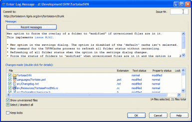
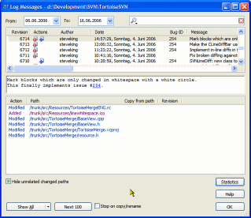

Integration with issue trackers
It is very common in Software Development for changes to be related to a specific bug or issue ID. Users of bug tracking systems (issue trackers) would like to associate the changes they make in Subversion with a specific ID in their issue tracker. Most issue trackers therefore provide a pre-commit hook script which parses the log message to find the bug ID with which the commit is associated. This is somewhat error prone since it relies on the user to write the log message properly so that the pre-commit hook script can parse it correctly.
TortoiseSVN can help the user in two ways:
- When the user enters a log message, a well defined line including the issue number associated with the commit can be added automatically. This reduces the risk that the user enters the issue number in a way the bug tracking tools can't parse correctly.
- Or TortoiseSVN can highlight the part of the entered log message which is recognized by the issue tracker. That way the user knows that the log message can be parsed correctly.
Entering log messages
When you enter your log message for a commit, the issue number is either marked with a different color so you can see and check that you have entered it correctly and it will be recognized as such. Or you can enter the issue number directly in the box in the right top corner of the dialog.
Of course, you can also combine those two input forms and have both the coloring and the input box.
{kind=link}
Checking log messages
The log dialog also recognizes the issue numbers as such and converts them into a link pointing to the issue in your issuetracker.
In a separate column, which is only visible if you assigned your project with an issuetracker, the issue number is shown. You can that way immediately see which commit corresponds to which issue.
{kind=link}
More on how to assign your project with an issuetracker and how to configure it can be found in our own docs.
If you rather have someone else telling you about this, Fog Creek have also a detailed page describing this.